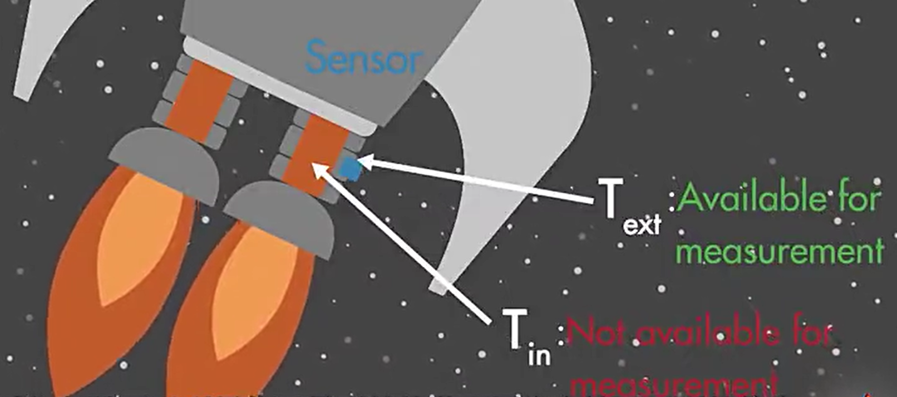
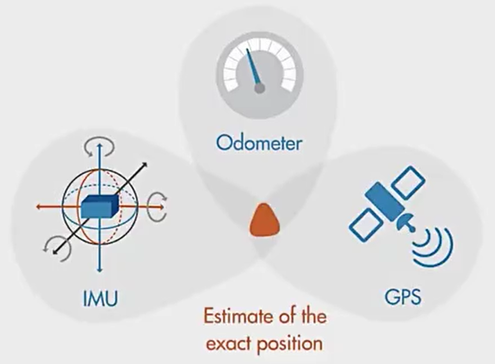
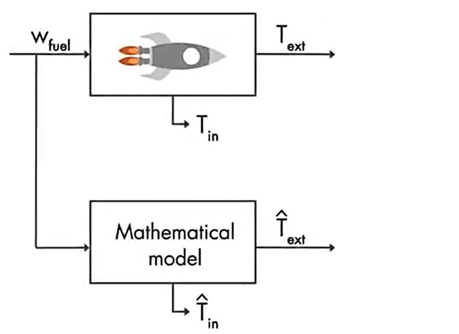
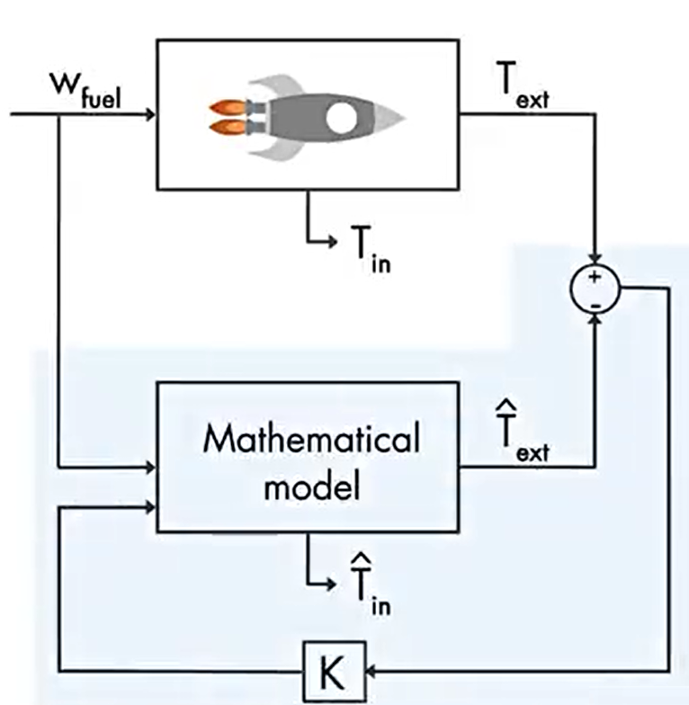
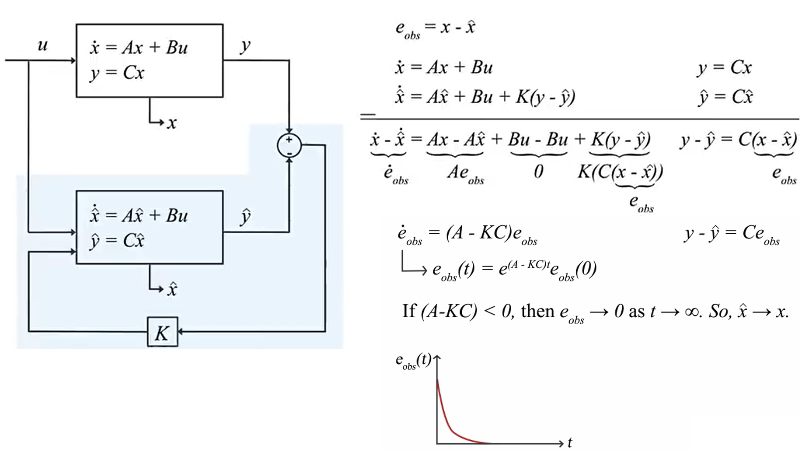
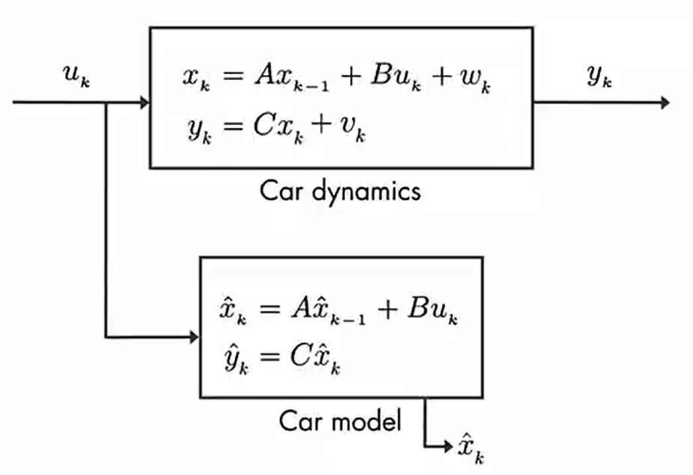
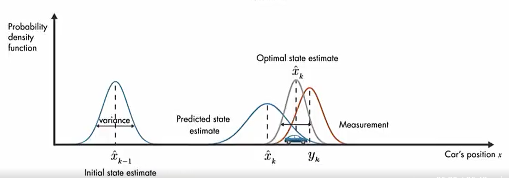
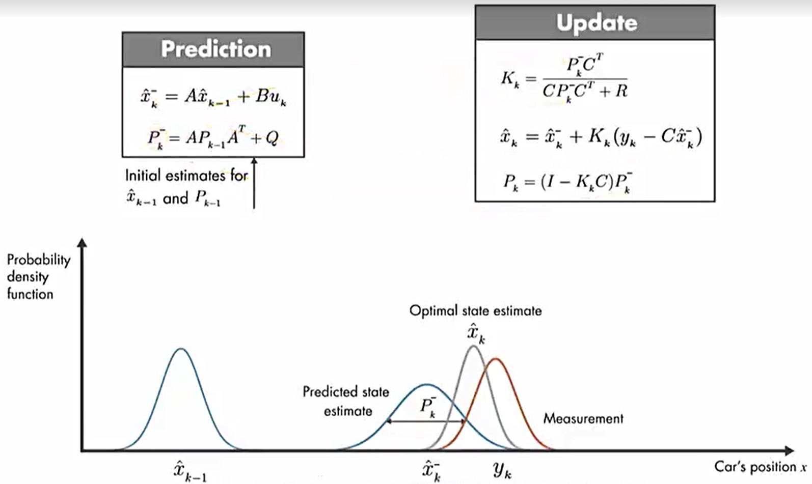
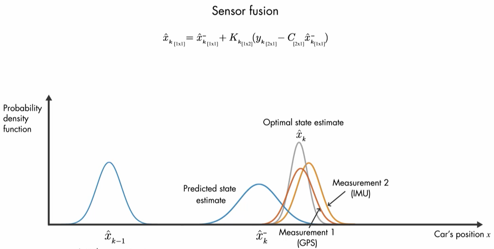
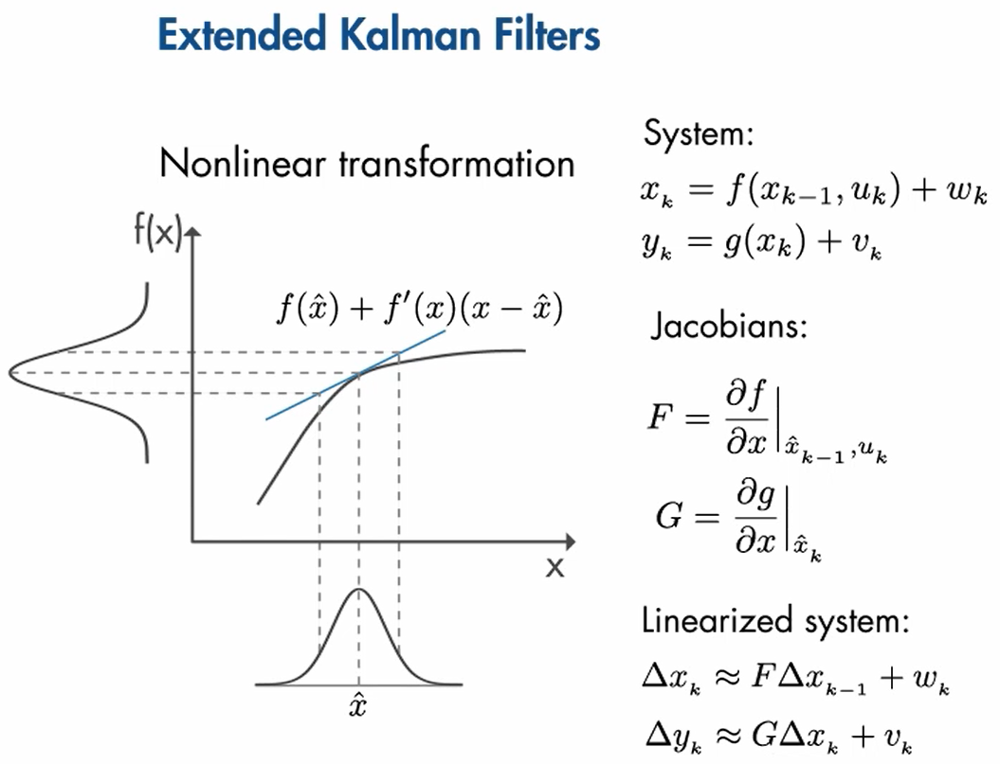

参考资料：Matlab video：Understanding Kalman Filters
前言
为了测量无人机的姿态，我们会用到一种传感器叫做IMU（Inertial Measurement Unit），它其中就包括了测量角速度的陀螺仪（Gyroscope）和测量角度的加速度计（accelerometer）。
但是，陀螺仪输出的是角速度，要通过积分才能获得角度，但是即使在零输入状态时，陀螺仪仍是有输出的，它的输出是白噪声和慢变随机函数的叠加，受此影响，在积分的过程中，必然会引进累计误差，积分时间越长，误差就越大。这时候，便需要加速度传感器的加入，利用加速度传感器来对陀螺仪进行校正。由于加速度传感器可以利用力的分解原理，通过重力加速度在不同轴向上的分量来判断倾角。同时，它没有积分误差，所以加速度传感器在相对静止的条件下，可以有效校正陀螺仪的误差。但在运动状态下，加速度传感器输出的可信度就要下降，因为它测量的是重力和外力的合力。
所以，为了准确的得到无人机的姿态，就需要将陀螺仪和加速度计的数据进行融合。最常用的就是卡尔曼滤波器（Kalman Filter），简称KF。
卡尔曼滤波器的适用范围
为什么要使用卡尔曼滤波器呢？首先，它可以用于估算无法被直接测量的系统。举例来说，我们如何监控火箭发动机内部的温度呢？因为火箭发动机内部的温度非常高，传感器放进去就会被融化掉，所以只能把传感器放在发动机的外侧，这时就可以使用卡尔曼滤波器来估算内部的温度，从而间接得到我们想要的信息。

第二种情况就是在数据源有噪音干扰时，我们可以用KF来估计系统的状态。举例来说，我们如何准确的得出汽车行驶距离呢？首先车上有三种sensor，IMU，里程表和GPS。因为IMU会产生累计误差，里程表会受到路况的影响，而GPS的信号有时会被物体遮挡，这时我们就可以用KF将这三个测量值结合，最后得到汽车最优的估算位置。

状态观察器
在了解KF之前，我们先了解一下什么是状态观察器（State Observers）。举一个例子，你不知道你的好朋友Timmy心情怎么样，你可以给她一个好吃的然后就可以通过她的表情来判断，所以状态观察可以帮助你估计你无法直接或测量的东西。我们接着刚才测量火箭发动机内部温度的例子来说，首先我们要给火箭发动机建立一个数学模型，因为给发动机的燃料量是已知的，将这个燃料量输入到数学模型中就可以得到一个估算的外部温度$\hat T_{ext}$以及一个估算的内部温度$\hat T_{in}$，于此同时我们也可以测出真实的火箭发动机外部的温度$T_{ext}$。但是在现实中，因为外界干扰以及传感器自身误差，测量值$T_{ext}$和理想值$\hat T_{ext}$肯定是不一样的。

因此我们的目的是让$T_{ext}$和$\hat T_{ext}$一致，这样的话$T_{in}$和$\hat T_{in}$就也是一样的。我们需要将$T_{ext}$和$\hat T_{ext}$的差值作为error反馈到数学模型中，于是问题就变成了如何选择控制器增益K使$T_{ext}$和$\hat T_{ext}$的误差最小化。

将模型写成数学表达式，如下图：

最优状态估计器
从上一节介绍的状态观察器我们知道，在理想情况下只要数学模型通过修正后就可以使误差收敛到0，但是在现实情况中，实际物体会受到环境的干扰而且传感器还有测量误差，这就导致我们得到的$y_k$是有干扰的。所以，为了更加准确的表达实际物体的模型，需要给测量值加上测量误差$v_k$以及给物体加上环境干扰误差$w_k$，如下图：

$v$是均值为0，协方差为R的高斯分布：$v\sim N(0,R)$，$w$是均值为0，协方差为Q的高斯分布：$w\sim N(0,Q)$。
假设我们这个状态观察器是用来描述汽车行驶距离的，$x$代表的是汽车实际位置，$y$代表的是汽车的测量位置。首先我们可以通过数学模型计算出汽车在$\hat x_{k-1}$的位置，但由于汽车会受到环境的干扰，那么汽车的实际位置就可能是在$\hat x_{k-1}$附近，可以用一个概率分布图来表示。然后在下一个时刻汽车的实际位置就会在$\hat x_k$附近，并且概率分布的方差会比上一个时刻大，因为误差会累积。与此同时，传感器也会给我们一个测量值$y_k$，由于这个值也是有误差的，所以汽车的实际位置同样也可以用概率分布图来表示。现在我们就有了估算位置概率分布$\hat x_k$以及测量位置概率分布$y_k$，将这个两个概率函数相乘就得到了另一个概率函数，这个函数的均值就是最优估计值。

卡尔曼滤波器
卡尔曼滤波器其实就是最优状态估计器的一种，是不过它取最有估计值时并不是简单的将两个概率函数相乘，我们先看一下卡尔曼滤波器的方程式：
$$
\hat x_k=A\hat x_{k-1}+Bu_k+K_k(y_k-C(A\hat x_{k-1}+Bu_k))
$$
是不是感觉很熟悉，其实它就是下图所示的蓝色区域：
为了得到最优估计值$\hat x_k$，首先我们要得到根据数学模型得到的预测值$\hat x_k^-=A\hat x_{k-1}+Bu_k$，这个预测值是用上一时刻的最优估计值计算得出的，于是KF就可以进一步写为：
$$
\hat x_k=\hat x_k^-+K_k(y_k-C(\hat x_k^-))
$$
我们可以将KF的计算分为两个部分，第一部分是根据数学模型得到的预测值$\hat x_k^-$，第二部分是通过反馈对预测值进一步更新，最后就得到了最优估计值。
现在唯一的问题就是反馈增益$K_k$该如何决定。对于KF来说，它是动态的对$K_k$进行更改，当上一时刻得出的最优值更靠近预测值时，那么这一时刻它就更相信预测值，反之亦然。接下来我们来看KF的计算过程，首先是根据上一时刻系统的状态通过数学模型进行预测：
$$
\begin{aligned}
&\hat x_k^-=A\hat x_{k-1}+Bu_k \\
&P_k^- = AP_{k-1}A^T+Q
\end{aligned}
$$
$P_k^-$是$\hat x_k^-$的协方差，因此通过这一步我们就得到了预估状态的概率分布函数。接下来就要更新增益$K_k$，然后计算出最优估计值$\hat x_k$以及它的方差$P_k$：
$$
\begin{aligned}
&K_k=\frac {P_k^-C^T}{CP_k^-C^T+R} \\
&\hat x_k = \hat x_k^-+K_k(y_k-C\hat x_k^-) \\
&P_k=(1-K_kC)P_k^-
\end{aligned}
$$

在这里我们讨论一下$K_k$的取值，当$P_k^-$等于0时，也就是说预测值$\hat x_k^-$的方差为0，所以它是100%可以被相信的，此时$K_k$等于0，最后就可以得到$\hat x_k=\hat x_k^-$，最优估计值就是预测值。反之，当$R$等于0时，也就是说测量值的方差为0，那么测量值就是100%可以被相信的，此时$K_k$等于$C^{-1}$，最后就可以得到$\hat x_k=y_k$。
KF也可以被用来做传感器融合，接着上述例子，为了增加测量的准确性，我们给车子又增加了传感器IMU，这时测量值就会变成一个2x1的向量，计算过程如下图：

将KF简单总结一下，首先它会通过一种方式将预测值和测量值进行融合，然后将这个结果作为这个时刻的最优解，然后判断这个最优解越靠近谁，在下个时刻就会给谁更多的权重就越相信谁。
扩展卡尔曼滤波器
卡尔曼滤波器可以为线性系统提供最优的估计值，但是对于非线性系统则不适用。对于非线性系统，我们需要将系统近似转化为线性系统后再进行计算，这个就是扩展卡尔曼滤波器（Extended Kalman Filter，即EKF）。当系统是非线性时，系统状态方程则写为如下形式：
$$
\begin{aligned}
&x_k=f(x_{k-1},u_k)+w_k \\
&y_k=g(x_k)+v_k
\end{aligned}
$$
其中$f(x_{k-1},u_k)$和$g(x_k)$都是非线性函数。
接下来我们需要求出方程$f$和$g$的Jacobian矩阵，也就是它们对$x$的偏导数：
$$
\begin{aligned}
&F=\frac {\partial f}{\partial x}|_{\hat x_{k-1},u_k} \\
&G=\frac {\partial g}{\partial x}|_{\hat x_k}
\end{aligned}
$$
被线性化处理的系统就变成了这样:
$$
\begin{aligned}
&\Delta x_k \approx F\Delta x_{k-1}+w_k \\
&\Delta y_k \approx G\Delta x_k+v_k
\end{aligned}
$$
接下来计算EKF的过程就和KF一样了，先是进行预测：
$$
\begin{aligned}
&\hat x_k^-=f(\hat x_{k-1},u_k) \\
&P_k^- = FP_{k-1}F^T+Q
\end{aligned}
$$
然后再更新：
$$
\begin{aligned}
&K_k=\frac {P_k^-G^T}{GP_k^-G^T+R} \\
&\hat x_k = \hat x_k^-+K_k(y_k-g(\hat x_k^-)) \\
&P_k=(1-K_kG)P_k^-
\end{aligned}
$$
